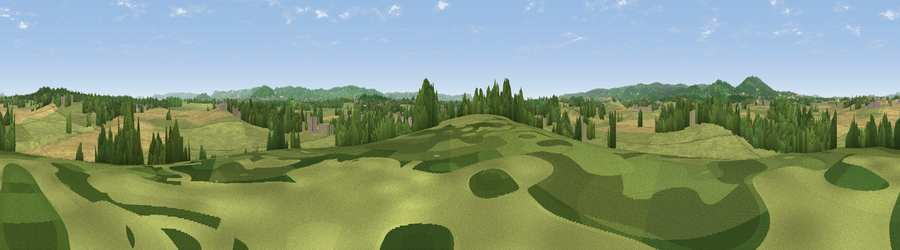

Clay Hill
#33246 in England · top 70% of its area beats it · near MinsterworthWhere it is
The exact computed spot (SO 76372 17177). Click the marker for map links.
The view, rendered

A 360° render of this exact spot computed from the terrain model, tree cover and land cover — summer colours, afternoon light, calibrated against photographs of famous viewpoints. Real trees, hedges and buildings will differ in detail.
The panorama
Grey silhouette: terrain skyline in each direction (720 bearings, Earth curvature and refraction included). Dashed green: skyline with trees (+15 m) and buildings (+8 m) as obstacles. Blue strip: how far the ground is visible on each bearing.
Where the view opens
Wedge length = distance to the farthest visible ground on that bearing (vegetation-aware). Rings at 10, 25 and 50 km.
What fills the view
69% grassland · 18% cropland · 11% woodland · 1% built-up
Angular shares of the visible panorama (visual magnitude), not map area. Landscape diversity 0.38 (0–1 Shannon).
Key numbers
More beautiful places nearby
The staircase of upgrades: each row has a higher view potential than everything closer. Driving times are estimates from straight-line distance, calibrated against real road routing — check an actual route before setting out.
| Place | Direction | Drive | Score |
|---|---|---|---|
| Rodway Hill | NNE · 3 km | ~7 min | 41.2 |
| Windmill Hill | ESE · 3 km | ~7 min | 52.7 |
| Hockley Hill | SSE · 4 km | ~9 min | 58.1 |
| Viewpoint near Huntley | WNW · 6 km | ~13 min | 75.0 |
| Viewpoint near Whaddon | ESE · 8 km | ~16 min | 77.7 |
| Viewpoint near Brookthorpe | ESE · 10 km | ~20 min | 78.0 |
| Painswick Beacon | ESE · 12 km | ~22 min | 79.6 |
| Viewpoint near Great Witcombe | E · 13 km | ~24 min | 80.5 |
51.85268, -2.34445 · source: osm peak · position refined by local search. Computed location — check access rights before visiting.